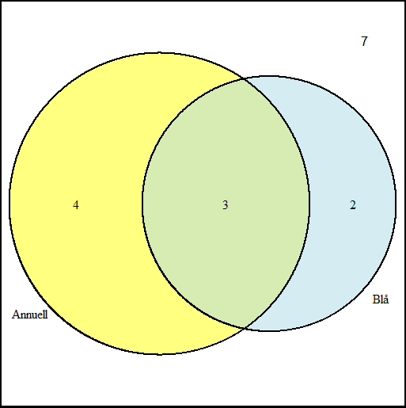

Introduktion och beskrivande statistik
Om statistik
Skeende och brus
\(\text{Observation} = \text{Fenomen} + \text{Brus}\)
Statistik är vetenskapen om bruset

Populationsbegreppet
Ekologisk population

Fysiska individer
Statistisk population
Variabelvärden
Stickprov
Ett stickprov är ett urval ur populationen

Slumpmässigt urval
Alla individer i population har någon sannolikhet att tas med i stickprovet
Obundet slumpmässigt urval
Alla individer i population har samma sannolikhet att tas med i stickprovet
Experiment
Styr en ingångsvariabel och mäter utfallet i en responsvariabel
Exempel
- Växthusförsök med skilda genotyper
- Populationssammansättning med eller utan bränning föregående år
Replikat och pseudoreplikat
\[\text{Observation} = \text{Fenomen} + \text{Brus}\]
Fenomenet är detsamma över replikaten, men bruset varierar
Upprepade försök (replikat) ger en klarare bild av fenomenet
Pseudoreplikat - upprepade mätningar på samma enhet
Randomisering
Behandlingar och observerade enheter
Randomisering: behandling paras med observerad enhet slumpmässigt
Beskrivande statistik
Statistisk variabel
En mätbar egenskap som varierar mellan individer
Taxologi för variabler
Kvalitativa variabler kan ej beskrivas med siffror
Kvantitativa variabler beskrivs med siffror
Kvantitativa variabler kan vara diskreta eller kontinuerliga

Taxologi för variabler, skaltyper
Variabler kan även kategoriseras i skaltyper
Skaltyp baseras på relation mellan utfall
Standardavvikelse, \(s\)
Standardavvikelsen \(s\) är roten av variansen
\[s = \sqrt s\]
\(s\) är på samma skala som den ursprungliga variabeln
Kvartilavstånd
Interquartile range, IQR
Avståndet mellan \(q_1\) och \(q_3\)
\[IQR = q_3 - q_1\]
Visualiseringar
Stapeldiagram
Staplar ger antalet observationer inom en viss kategori

Cirkeldiagram
Sektorer i en cirkel ger andelen observationer inom en viss kategori
Det finns människor som är väldigt negativt inställda till cirkeldiagram

Lådogram (boxplot)
Visar minimum och maximum, kvantiler och eventuella extremvärden
Den inre boxen går från \(q_1\) till \(q_3\),
Morrhår går till minsta respektive högsta värde som inte är extremvärden
Extremvärden (bortom ett och ett halvt IQR från närmsta kvartil) markeras med punkter

Histogram
Generaliserar stapeldiagrammet till kontinuerliga variabler
Delar in tallinjen i intervall och skapar staplar vars höjd symboliserar antalet observationer i det intervallet delat på intervallets bredd

Venn-diagram
Cirklar anger andelen observationer med en viss egenskap
Överlappande cirklar anger observationer som har flera egenskaper
